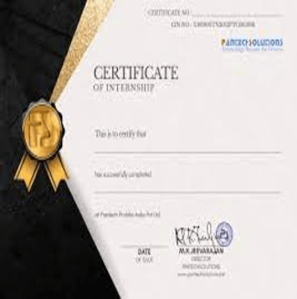
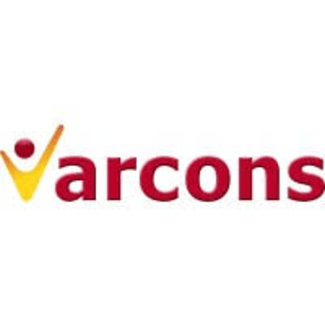
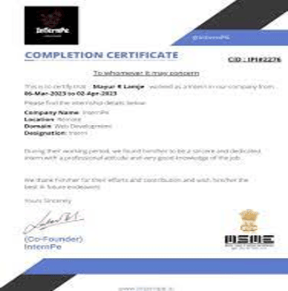
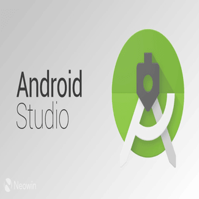
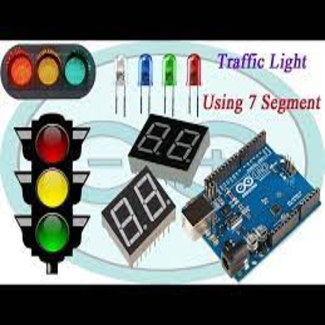

Hi, My name is Satish A
and I am a passionate
Intenship

Pantech-e-Solution
During my internship at Pantech-e-Solution, I gained valuable
experience in artificial intelligence, data analytics, machine
learning, and Python programming. Engaging in hands-on projects, I
honed my skills and contributed to innovative solutions. This
experience enhanced my understanding of cutting-edge technologies
and their practical applications. I am eager to apply the
knowledge and expertise acquired at Pantech-e-Solution to future
challenges in the dynamic field of artificial intelligence and
data science.

Varcon Technologies
My internship at Varcon Technology immersed me in machine
learning, focusing on a real-world project centered around disease
prediction based on symptoms. This hands-on experience equipped me
with practical skills in implementing machine learning algorithms
and addressing healthcare challenges. Working on the forefront of
technology and health, I honed my ability to translate theoretical
knowledge into impactful solutions. I am excited to leverage these
experiences in contributing to advancements at the intersection of
machine learning and healthcare.

Intenpe
During my internship, I immersed myself in Core Java, gaining
comprehensive insights into its fundamental concepts and
applications. I undertook various projects, enhancing my
proficiency in Java programming, object-oriented design, and
problem-solving. This hands-on experience equipped me with the
skills needed to develop robust and efficient Java applications. I
am now well-prepared to apply my knowledge in diverse software
development scenarios and contribute effectively to Java-based
projects in the professional realm.
ACADEMIC PROJECT

Student NSB
Student NSB offers a unified platform featuring VTU notes,
scholarship information, and bus pass applications on a single
website. Students can access comprehensive VTU notes, apply for
scholarships, and conveniently request bus passes through our
user-friendly website. Our primary goal is to provide a
centralized facility for students, enhancing their overall
experience. The website is developed using PHP, MySQL, HTML, CSS,
and JavaScript, ensuring a robust and interactive platform.

All_In_One_NSB
This application serves as a comprehensive platform for VTU
students, offering features such as VTU notes, calculators,
scholarship application, and bus pass information. Students can
conveniently access educational resources and utilize tools for
their academic needs. Additionally, the app facilitates
communication with a built-in ChatGPT feature, providing a
versatile and helpful tool for students in various aspects of
their academic journey.
Basketball_Shoting
The abstract introduces an OpenGL-based 3D basketball shooting
game implemented in C++. This cross-platform project employs
hardware-accelerated graphics rendering, utilizing a dedicated
GPU. Users can manipulate the 3D basketball court view with mouse
clicks and keyboard keys, allowing for dynamic angles. The player
interacts with the environment by shooting the ball into the
basket using specific keys, while also employing zoom features
along the x, y, and z axes.

Smart Ambulance Detection In Traffic Signals Using Image
Processing
i-AVR is an IoT-based system tackling ambulance delays with a
portable healthcare unit and Android navigation. It calculates the
patient's criticality index, recommends the nearest healthcare
center, and ensures continuous vitals monitoring. The Android unit
suggests optimal routes based on vitals anomalies, showcasing
effective network performance. Our implementation includes an
Android app notifying traffic police, automatically adjusting
signals with Arduino and OpenCV, ensuring a swift response during
critical situations.